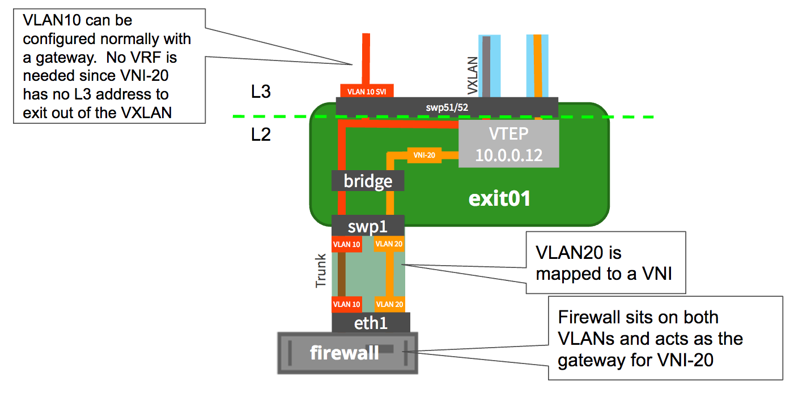
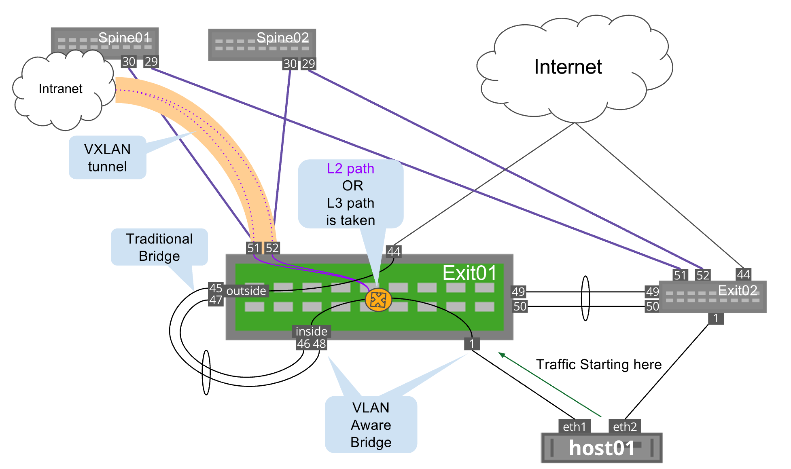
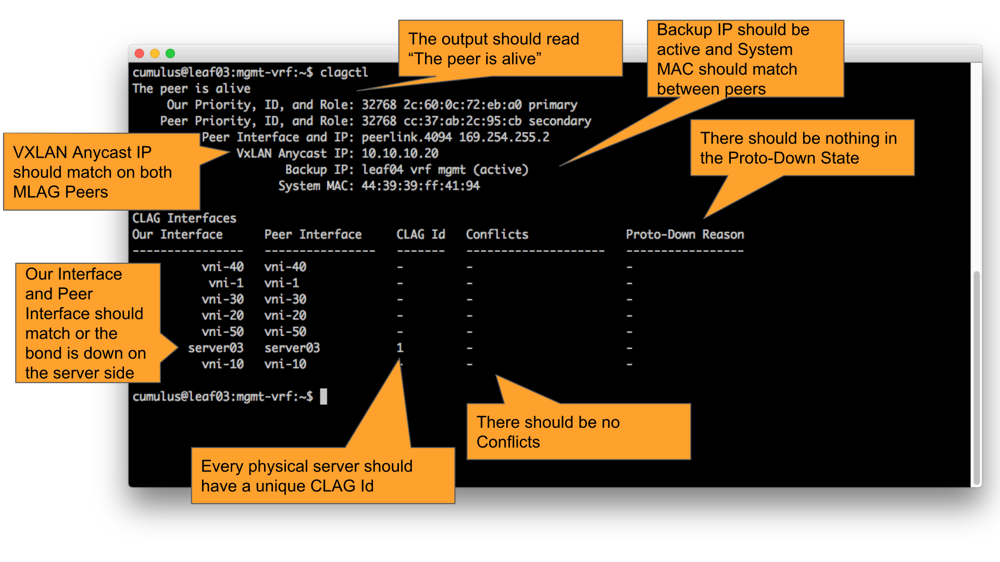

VXLAN Hyperloop
This chapter covers configuring VXLAN gateways using a loopback cable (which we call a hyperloop) on non-RIOT (VXLAN routing) capable ASICs running Cumulus Linux.
The Broadcom Trident II and Tomahawk ASICs have a limitation where a L2 bridge that contains a VXLAN interface can not also have an IP address assigned to it. This is an expected limitation with this ASIC, because of the ordering of the decapsulation. A packet that is decapsulated will already have passed the portion of the ASIC capable of reading the IP address lookup (for example, VXLAN lookup happens before IP address lookup). As of Cumulus Linux 3.2.1 even ASICs that are capable of VXLAN routing (such as the Broadcom Trident II+ or Mellanox Spectrum) also require a hyperloop. Please contact your sales team if there is any confusion. Refer to the Cumulus Networks Hardware Compatibility List to determine which ASIC is running on the switch.
This limitation will not exist in future ASICs. For example, the Trident II+ has the RIOT (Routing In/Out of Tunnels) feature.
RIOT and VXLAN Routing are not supported in Cumulus Linux 3.2.1, and requires a hyperloop.
Why would you need a hyperloop?
Without native VXLAN routing support, external gateways, firewalls or routers are attached to a VTEP do the routing. (see diagram below)
It is very common in Network Virtualization environments for firewalls to sit on internal VXLAN tied VLANs as well as external VLANs that are routed out to the internet. Look at the following illustration as an example of this method. No special configuration is needed on the switch because the firewall acts as the gateway between internal (VLAN20 / VNI-20 in the example) and the routable external VLAN 10. VLAN10 could have a SVI (Switch Virtual Interface) configured to route out of the VLAN. This also has the benefit of where a VXLAN represents a tenant (or purposely separated application) to keep the firewall between VXLANs so that traffic can be filtered and sanitized to the network operators specification.

With integrated VXLAN routing and bridging using a hyperloop:
-
One can avoid having to use external gateways/routers. A hyperloop gives you the ability to do integrated VXLAN routing on a non-RIOT (VXLAN routing) ASIC.
-
If applications are hosted on the switch and need L3 connectivity, then a hyperloop can be used as well to provide reachability for this application..
When not to use a hyperloop
-
If external firewall is used for routing and security (as shown above), then there is no need for external loopback as firewall takes care of routing across subnets.
-
If bandwidth for traffic to be routed is huge that we cannot provision such a high bandwidth using a hyperloop, then one should have dedicated gateways connected to exit leafs.
-
If north-south routing involves edge router functionality, then that functionality cannot be provided by leaf switches and so it requires dedicated edge gateways to achieve the same, like NAT.
Contents
Exiting a VXLAN with a Hyperloop
VXLAN Hyperloop
This limitation means a physical cable must be attached from one port on leaf1 to another port on leaf1. One port is an L3 port while the other is a member of the bridge. For example, following the configuration above, in order for a layer 3 address to be used as the gateway for vni-10, you could configure the following on exit01:
auto loiface lo inet loopback address 10.0.0.11/32 ***some output removed for brevity (e.g. peerlink and host facing bonds)*** auto bridgeiface bridge bridge-vlan-aware yes bridge-ports inside server01 server02 vni-10 vni-20 peerlink bridge-vids 100 200 bridge-pvid 1 mstpctl-treeprio 8192 auto outsideiface outside bond-slaves swp45 swp47 alias hyperloop outside mstpctl-bpduguard yes mstpctl-portbpdufilter yes auto insideiface inside bond-slaves swp46 swp48 alias hyperloop inside mstpctl-bpduguard yes mstpctl-portbpdufilter yes auto VLAN100GWiface VLAN100GW bridge_ports outside.100 address 172.16.100.2/24 alias VXLAN GW 100 Linux Bridge address-virtual 44:39:39:FF:01:90 172.16.100.1/24auto VLAN200GWiface VLAN200GW bridge_ports outside.200 address 172.16.200.2/24 alias VXLAN GW 200 Linux Bridge address-virtual 44:39:39:FF:02:90 172.16.200.1/24 auto vni-10iface vni-10 vxlan-id 10 vxlan-local-tunnelip 10.0.0.11 bridge-access 100 auto vni-20iface vni-20 vxlan-id 20 vxlan-local-tunnelip 10.0.0.11 bridge-access 200Packet Flow Diagram

Trident II and Tomahawk switchd Flag
For the Broadcom Trident II and Tomahawk ASICs to be able to have a hyperloop work correctly, you must configure a switchd flag. This change is not needed on any other hardware ASIC.
cumulus@exit01:mgmt-vrf:/root$ sudo nano /etc/cumulus/switchd.confhal.bcm.per_vlan_router_mac_lookup = TRUERestart switchd for the change to take place:
cumulus@exit01:mgmt-vrf:/root$ sudo systemctl restart switchd.serviceRestarting switchd is a disruptive change and affects data plane network traffic.
Turning on the hal.bcm.per_vlan_router_mac_lookup = TRUE will limit the Trident 2 switch to a configurable 512 local IP addresses (SVIs, etc) so this should only be used as a last resort. This is only a limitation on this specific ASIC type.
VXLAN Routing and Hyperloop Troubleshooting Matrix
-
Are you running an ASIC capable of VXLAN?
Must be running one of the following:-
Broadcom Trident 2
-
Broadcom Trident 2+
-
Broadcom Tomahawk
-
Mellanox Spectrum
If you are unsure use a "net show system" as displayed in the following step. If you don't have an ASIC capable of VXLAN you can't encapsulate or decapsulate VXLAN traffic.
-
-
Are you running the newest code? This guide and testing was done on Cumulus Linux 3.2.1. Please upgrade the code on the Cumulus Linux system.
cumulus@leaf01:mgmt-vrf:~$ cat /etc/lsb-releaseDISTRIB_ID="Cumulus Linux"DISTRIB_RELEASE=3.2.1DISTRIB_DESCRIPTION="Cumulus Linux 3.2.1"or use NCLU:
cumulus@leaf01:mgmt-vrf:~$ net show systemDell S4048-ONCumulus Version3.2.1Build: Cumulus Linux3.2.1Chipset: Broadcom Trident2 BCM56854Port Config:48x 10G-SFP+ &6x 40G-QSFP+CPU: (x86_64) Intel Atom C23381.74GHzUptime:7days,21:00:57 -
If you are using EVPN are you using the correct Quagga version?
Use a dpkg -l to check the Quagga version as shown below:cumulus@leaf01:mgmt-vrf:~$ dpkg -l quaggaDesired=Unknown/Install/Remove/Purge/Hold| Status=Not/Inst/Conf-files/Unpacked/halF-conf/Half-inst/trig-aWait/Trig-pend|/ Err?=(none)/Reinst-required (Status,Err: uppercase=bad)||/ Name Version Architecture Description+++-========================-=================-=================-=====================================================ii quagga1.0.0+cl3eau8 amd64 BGP/OSPF/RIP routing daemonYou must be running eau8 as shown above under the Version column. If you are not running the right version of Quagga for EVPN follow the directions here.
-
Are HER (Head End Replication) entries being programmed into the bridge fdb table?
Check for 00:00:00:00:00:00 entries per VXLAN:cumulus@leaf03:mgmt-vrf:~$ bridge fdb show | grep00:00:00:00:00:0000:00:00:00:00:00dev vni-40dst10.10.10.30self permanent00:00:00:00:00:00dev vni-40dst10.10.10.40self permanent00:00:00:00:00:00dev vni-1dst10.10.10.30self permanent00:00:00:00:00:00dev vni-1dst10.10.10.40self permanent00:00:00:00:00:00dev vni-30dst10.10.10.30self permanent00:00:00:00:00:00dev vni-30dst10.10.10.40self permanent00:00:00:00:00:00dev vni-20dst10.10.10.30self permanent00:00:00:00:00:00dev vni-20dst10.10.10.40self permanent00:00:00:00:00:00dev vni-50dst10.10.10.30self permanent00:00:00:00:00:00dev vni-50dst10.10.10.40self permanent00:00:00:00:00:00dev vni-10dst10.10.10.30self permanent00:00:00:00:00:00dev vni-10dst10.10.10.40self permanentor use NCLU:
cumulus@leaf03:mgmt-vrf:~$ net show bridge macsVLAN Master Interface MAC TunnelDest State Flags LastSeen-------- -------- ----------- ----------------- ------------ --------- ------- ----------------1bridge server0390:e2:ba:7e:96:d900:01:07untagged vni-100:00:00:00:00:0010.10.10.30permanent self4days,22:25:42untagged vni-100:00:00:00:00:0010.10.10.40permanent self4days,22:25:42untagged vni-1000:00:00:00:00:0010.10.10.30permanent self4days,22:25:42untagged vni-1000:00:00:00:00:0010.10.10.40permanent self4days,22:25:42untagged vni-2000:00:00:00:00:0010.10.10.30permanent self4days,22:25:42untagged vni-2000:00:00:00:00:0010.10.10.40permanent self4days,22:25:42untagged vni-3000:00:00:00:00:0010.10.10.30permanent self4days,22:25:42untagged vni-3000:00:00:00:00:0010.10.10.40permanent self4days,22:25:42untagged vni-4000:00:00:00:00:0010.10.10.30permanent self4days,22:25:42untagged vni-4000:00:00:00:00:0010.10.10.40permanent self4days,22:25:42untagged vni-5000:00:00:00:00:0010.10.10.30permanent self4days,22:25:42untagged vni-5000:00:00:00:00:0010.10.10.40permanent self4days,22:25:42untagged bridge peerlink 2c:60:0c:72:eb:a0 permanent5days,00:53:13untagged bridge server03 2c:60:0c:72:eb:70permanent5days,00:53:13untagged bridge vni-186:c9:5c:cc:88:54permanent4days,22:28:23untagged bridge vni-1032:d5:3a:99:36:f7 permanent4days,22:28:23untagged bridge vni-209a:91:5a:7e:0f:e8 permanent4days,22:28:23untagged bridge vni-306a:33:ff:fd:ca:34permanent4days,22:28:23untagged bridge vni-40e2:1f:a4:7c:75:2b permanent4days,22:28:23untagged bridge vni-50d6:df:b4:85:4d:55permanent4days,22:28:23If you are not getting HER entries, there is several things you can try:
-
Make sure you are using LNV OR EVPN. You can only use one or the other, not both at the same time.
-
Make sure you are not trying to use any VNI/VXLAN values over 65535. For example, VXLAN 70000 is not supported in Cumulus Linux 3.2.1.
-
Make sure you are not using the reserved VLAN range, by default this is 3000-3999. The value can be seen in /etc/cumulus/switchd.conf for the resv_vlan_range variable.
-
-
If you are using an MLAG VTEP (dual attached), is it set up correctly?

Check the outputs. Often, when VXLAN is considered to be non-working, it's actually due to an incorrect setup on the server OS, whether it's Ubuntu, Microsoft Windows or RHEL. -
Can you ping from host to host on the same VXLAN?
For example, in the following network diagram, can server01 ping to server03 on any of the VLANs (VLAN1, VLAN100, VLAN200)?

If you can't even ping from server to server this is not a VXLAN gateway problem, but a problem with the network itself. This must be fixed prior to making a VXLAN gateway with or without a hyperloop.Only proceed past this point if you can get server to server connectivity on the same VXLAN
-
Are you on a Broadcom Trident II?
If and only if you are using a switch with a Broadcom Trident II ASIC, you must set the /etc/cumulus/switchd.conf flag for hal.bcm.per_vlan_router_mac_lookup = TRUE and restart switchd. -
Is the SVI on a physical interface or on a traditional bridge?
The SVI (Switch VLAN interface) IP address for a hyperloop MUST be on a traditional bridge. Please follow the configuration guidelines on the above.
-
Is the port plugged in where it is supposed to be plugged in?
Use lldpctl or net show lldp to see what ports are hooked up.cumulus@leaf03:mgmt-vrf:~$ net show lldpLocal Port Speed Mode Remote Port Remote Host Summary------------ ------- ------------- ---- ----------------- --------------- -------------------------eth0 1G Mgmt ==== swp42 oob-mgmt-switchIP:10.50.100.53/24(DHCP)swp1 10G BondMember ====90:e2:ba:7e:96:d8 server03 Master: server03(UP)swp49 40G BondMember ==== swp49 leaf04 Master: peerlink(UP)swp50 40G BondMember ==== swp50 leaf04 Master: peerlink(UP)swp51 40G NotConfigured ==== swp3 spine01swp52 40G NotConfigured ==== swp3 spine02swp53 40G NotConfigured ==== swp54 leaf03swp54 40G NotConfigured ==== swp53 leaf03Notice above that swp53 and swp54 are a loopback cable (hyperloop) where it is connected to itself.
-
Is the VRR MAC address unique per subnet?
Make sure that VRR is configured correctly and that each MAC address is unique per VLAN.